.ab-item::before.$wp_admin_bar->add_node( array( 'id' => 'example3', 'title' => 'Example 3', ) );
#wpadminbar #wp-admin-bar-example3 > .ab-item::before {
content: "\f109"; /* dashicons-admin-post */
}
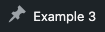
.ab-icon::before for the empty span in its title.$wp_admin_bar->add_node( array( 'id' => 'zz-css', 'title' => '<span class="ab-icon"></span>Own CSS', ) );
#wpadminbar #wp-admin-bar-zz-css .ab-icon::before {
content: "\f155"; /* star */
}
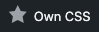
$wp_admin_bar->add_node( array( 'id' => 'zz-span', 'title' => '<span class="ab-icon dashicons-before dashicons-chart-bar"></span>Dashicon span', ) );
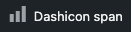

$wp_admin_bar->add_node( array( 'id' => 'zz-img', 'title' => '<span class="ab-icon"><img …></span>Own image', ) );

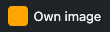
.ab-icon::before.// Core node, no PHP.
#wpadminbar #wp-admin-bar-comments .ab-icon::before {
content: "\f155"; /* star */
}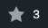
$wp_admin_bar->add_node( array( 'id' => 'wp-logo', 'title' => '<img …> Brand', ) );
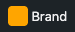
.ab-item::before, with its title replaced.$wp_admin_bar->add_node( array( 'id' => 'edit', 'title' => 'New title', ) );
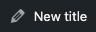
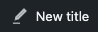
.ab-icon::before, with its title replaced and the empty span kept.$node = $wp_admin_bar->get_node( 'new-content' ); $wp_admin_bar->add_node( array( 'id' => 'new-content', 'title' => str_replace( '>New<', '>Add<', $node->title ), ) );
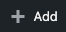
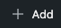
add_menu_page( …, 'dashicons-chart-bar' );
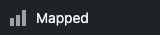
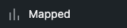
menu_icon.register_post_type( 'zz_book', array( 'show_ui' => true, // No menu_icon. ) );
add_menu_page( …, 'dashicons-heart' );
add_menu_page( …, 'data:image/svg+xml;base64,…' );

none.add_menu_page( …, 'none' );
.ab-item::before.// Core node, no PHP.
#wpadminbar #wp-admin-bar-edit > .ab-item::before {
content: "\f155"; /* star */
}.ab-item::before.// Core node, no PHP.
#wpadminbar #wp-admin-bar-site-editor > .ab-item::before {
color: #f86368;
}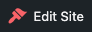
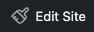
content on .ab-item::before.// Core node, no PHP.
#wpadminbar #wp-admin-bar-site-name > .ab-item::before {
content: "";
}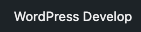
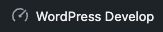
display: none on .ab-item::before.// Core node, no PHP.
#wpadminbar #wp-admin-bar-my-sites > .ab-item::before {
display: none;
}
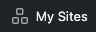